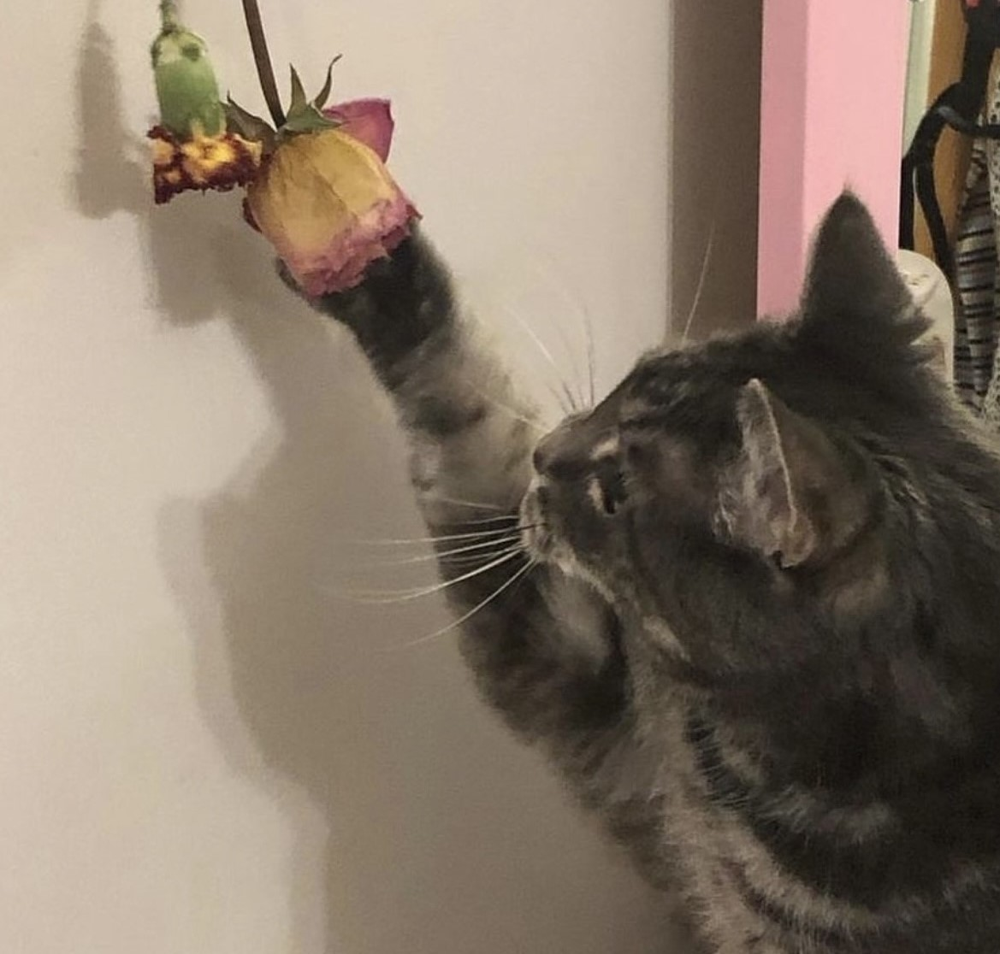

Lolly.
2004-2022

Lolly was with us for 18 years and was the most sweet and gentle girl on the planet. During quarantine we could spend our days curled up together 24/7. Whenever I would bring home sushi she wpuld smell it from across the house and come running to try and steal it. You could always find her sitting in her favourite spot on the top of the couch in the sun or under a christmas tree. She was my first best friend.
